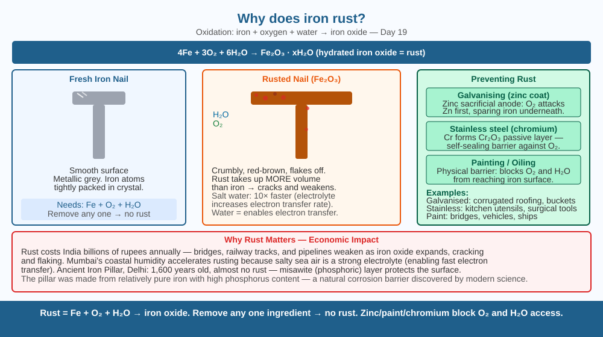

Understand the chemistry that slowly destroys iron — and why the same chemistry is the reason we can breathe.
A new iron nail left in a corner for a few weeks comes back covered in a reddish-brown powder. The nail is lighter than before — some of the metal itself has disappeared. Where did it go? And why doesn't aluminium or gold do the same thing?
Rusting is oxidation — iron atoms chemically bond with oxygen atoms. The process requires three ingredients working together:
The overall reaction: 4Fe + 3O₂ + 6H₂O → 4Fe(OH)₃ which then dehydrates to Fe₂O₃·xH₂O — hydrated iron oxide. This is rust.
Rust is fundamentally different from iron. Iron is strong and dense; rust is crumbly, porous, and weak. Rust also occupies more volume than the iron it replaced — causing the flaky, expanding layer that breaks concrete and snaps bolts.
Why does water speed it up? Water dissolves salts and other ions that carry charge, turning the wet iron surface into a mini battery. Salty seawater rusts iron 10× faster than fresh water because more ions are available to carry charge.
Think of iron atoms as people holding hands. Oxygen molecules are thieves trying to grab those hands. Normally the iron people hold on tightly. But when water is present, it acts like a crowded bazaar — it's easier for the thieves (oxygen) to sneak in and grab hands (electrons). Once oxygen grabs an iron atom's electrons, that iron atom is no longer part of the metal — it's rust. The thieves have stolen part of the nail.

The diagram shows a cross-section of an iron surface. O₂ molecules from air approach the iron surface. H₂O molecules are shown between them. Arrows show electrons (e⁻) moving from iron to oxygen. The product layer — reddish-brown Fe₂O₃ — builds up on the surface. A second panel shows galvanisation: a zinc layer on top of iron, with zinc oxidising instead of iron (sacrificial protection).
Set up three nails in separate glasses: (1) iron nail in plain water + air, (2) iron nail in water sealed with cooking oil on top (blocking air), (3) iron nail in dry glass with silica gel (no water). Check after 3 days. Prediction: nail 1 rusts fastest (both water and air), nail 2 rusts slowly or not (no air), nail 3 doesn't rust (no water). This proves both water AND oxygen are needed.
The same process that makes iron rust — giving electrons to oxygen — is what powers your body's cells. In cellular respiration, food molecules donate electrons to oxygen, releasing energy that powers your muscles and brain. Oxygen "corrodes" your food just as it corrodes iron; both are oxidation reactions. The key difference is your cells use enzymes to control the reaction slowly and capture the energy. Fire (combustion) is the same reaction happening uncontrolled and fast. Is breathing more like rusting slowly, or burning quickly?
What is the chemical process that causes iron to rust?
Why is understanding the chemistry of rusting more useful than knowing that iron turns reddish-brown?
If you coated an iron nail with a layer of paint before leaving it outside, what would you predict?
Mumbai's coastal air contains salt spray. Delhi's dry inland air does not. Both cities have iron bridges of similar age. Predict which bridge would need more rust maintenance — and explain your prediction using the three-ingredient model (iron, oxygen, water). Then explain why a steel bridge in a desert like Rajasthan might last decades without maintenance but still eventually needs inspection.
The rust problem costs the world economy about $2.5 trillion per year — roughly 3.4% of global GDP. This includes collapsing bridges, corroded pipelines, and failing offshore oil platforms. Yet the same iron that rusts in moist air is the same element that carries oxygen in your blood (as haemoglobin). Iron's tendency to react with oxygen is simultaneously the thing that destroys our infrastructure and the thing that makes animal life possible.
Iron + oxygen + water → iron oxide (rust). Water speeds up the reaction by carrying charge. Prevention: paint (barrier), galvanise (zinc sacrifices itself), stainless steel (chromium passive layer).